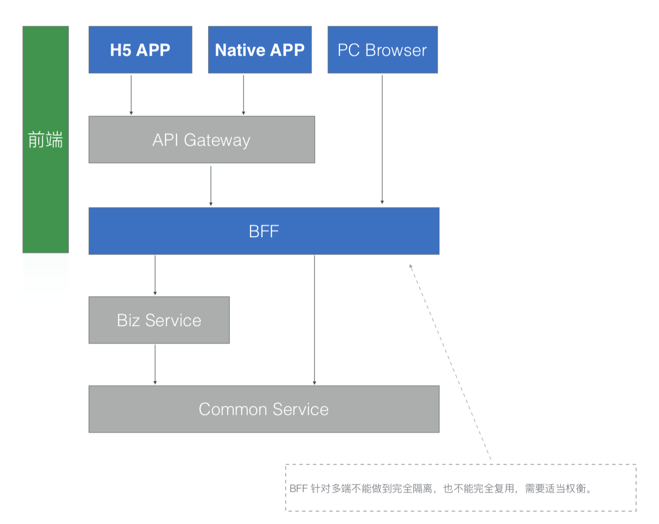

BFF知识要点
什么是BFF
Backend for Frontends(以下简称BFF) 顾名思义，是为前端而存在的后端(服务)中间层。即传统的前后端分离应用中，前端应用直接调用后端服务，后端服务再根据相关的业务逻辑进行数据的增删查改等。那么引用了 BFF 之后，前端应用将直接和 BFF 通信，BFF 再和后端进行 API 通信，所以本质上来说，BFF 更像是一种“中间层”服务。

BFF要解决什么问题
- 移动端UI体验通常与PC端不一样
- 屏幕空间小，所能显示的数据也少
- 建立多个连接会增加耗电，前端做数据聚合成本高
- 交互方式差异很大，后端API需要支持的功能也不同。比如PC端填表单，移动端扫码……
- 不同的渠道，可能存在显示或者交互方式不同的地方，通过BFF端来实现
- 服务端模板
- 对数据进行聚合（合并多个接口调用）、编排（格式化成前端想要的样子）、裁剪（去掉前端不需要的信息）
- 缓存聚合调用的结果
- 给某种UI体验（如移动端）提供特定功能
- 供第三方使用的API，便于维护因第三方限制而添加的那部分逻辑
从服务的角度看，BFF实际上是限制了单一服务所支持的消费者（指前端应用）数量，从而让它们更易于使用（更贴合前端需要）和更改，并帮助开发前端应用的团队保留更多的自主权：
如何实现(技术栈)
探索方向
- 稳定性：保障BFF的可靠性，如通过日志、错误分析、监控、报警等手段
- 同构：让BFF与前端体验使用相同的技术栈，如基于Node的同构方案
- 一体化：一方面针对下游服务提供mock方案，另一方面允许同构、非同构应用共存
解决方案
- node+graphQL
优势
- BFF模式最大好处是关注点分离（separation of concerns），下游服务可以专注于业务领域模型，前端UI专注于用户体验：
后端可以专注于业务领域，更多从领域模型的视角去思考问题，页面视角的数据则交给前端型全栈工程师去搞定。领域模型与页面数据是两种思维模式，通过BFF可以很好地解耦开，让彼此更专业高效。
- 从分工的角度看：
BFF模式不仅仅是一种技术架构，从社会分工角度讲，BFF更是一种多元价值导向的分层架构，每一层都有不错的空间去施展。
主要参考
Backend-For-Frontend using GraphQL under Microservices 上面的译文 Backend For Frontend (BFF)